Fairytale
The Last Sleigh Ride
The Christmas village at the North Pole
Tricky: the decisive clues are well hidden – for groups who like a real puzzle.
Perfect for: Christmas party Birthday Office party
Instant PDF · 5–12 players
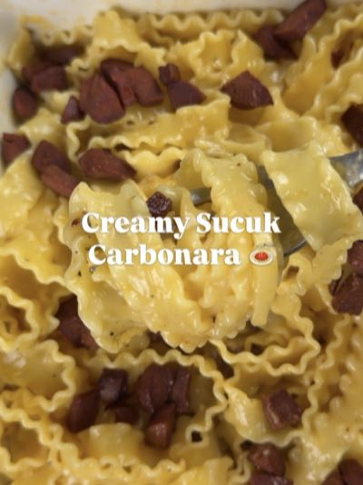
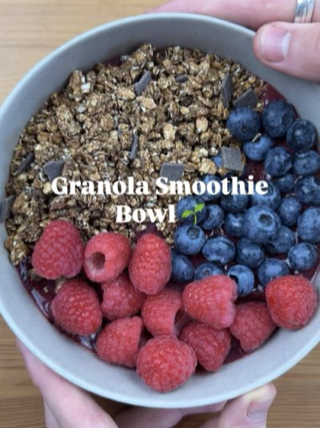
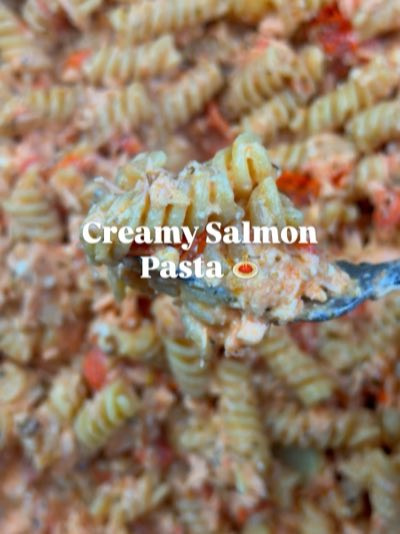
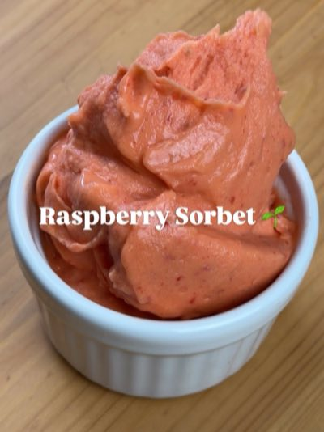
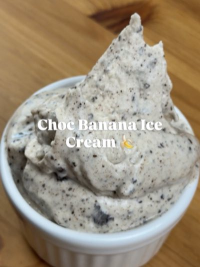
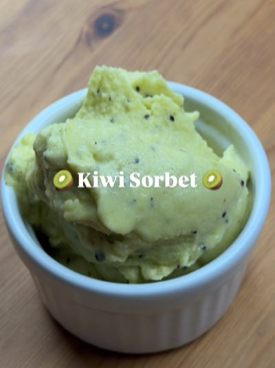
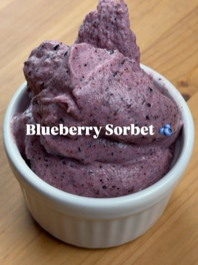
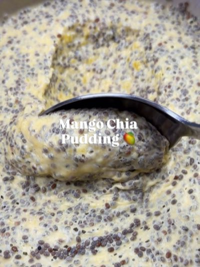
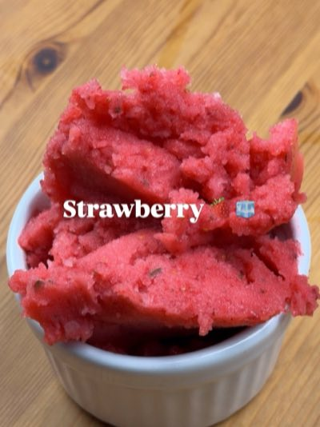
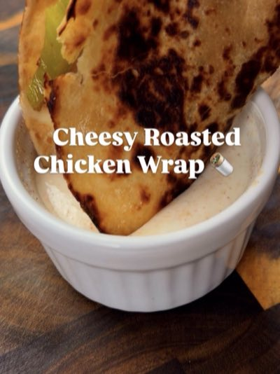
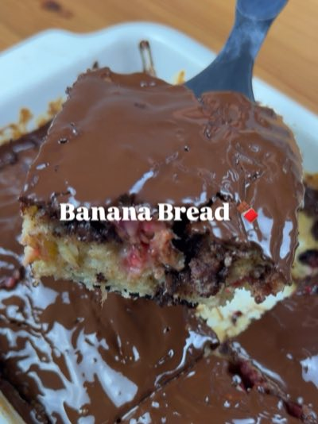
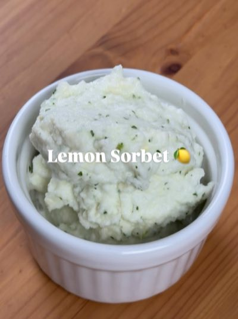
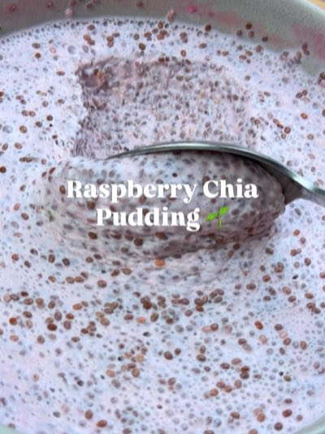
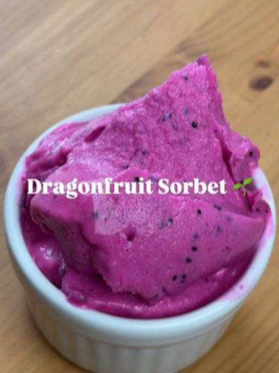
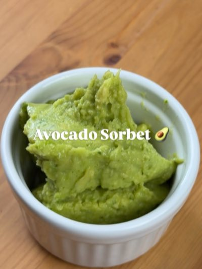
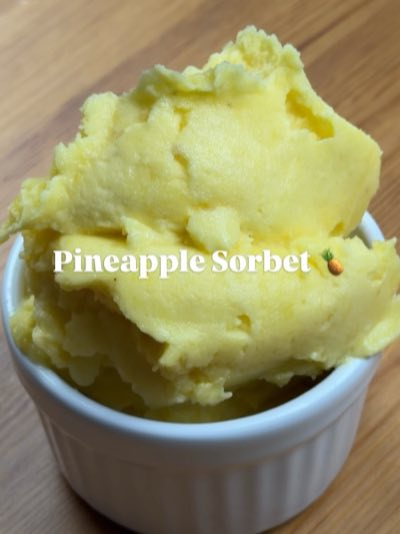
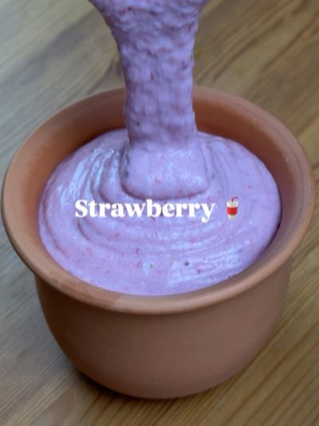
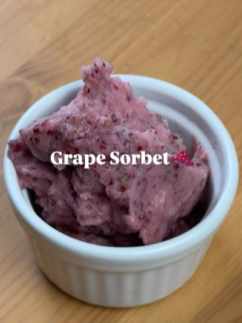
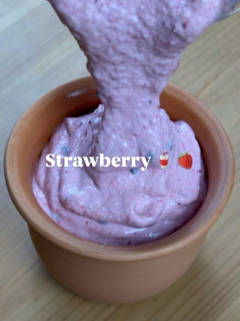
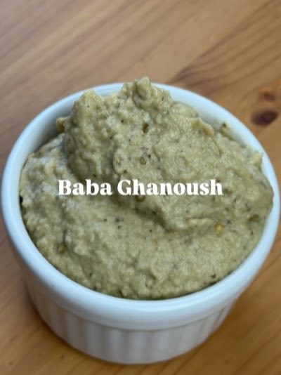
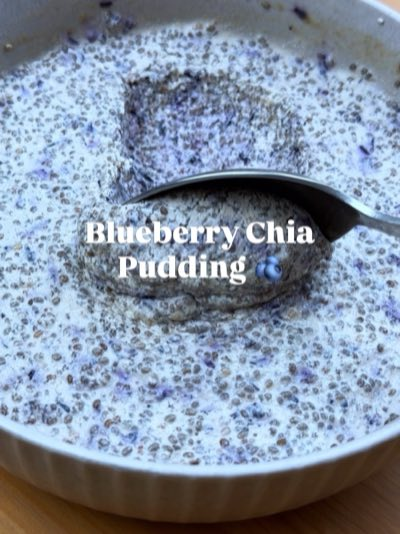
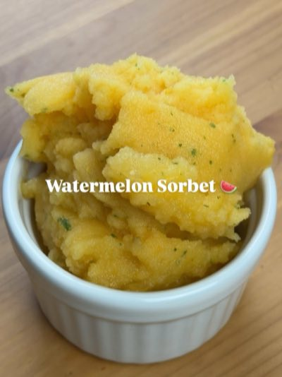
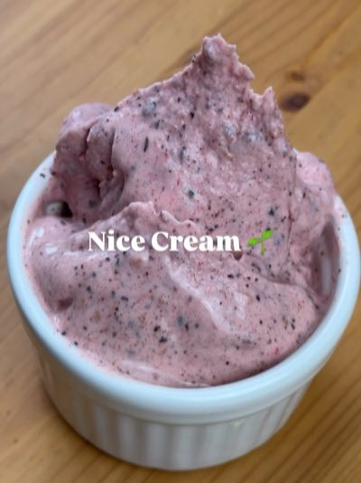
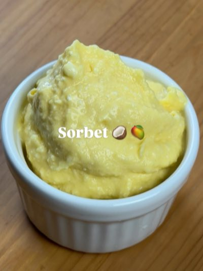
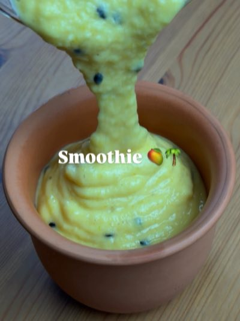
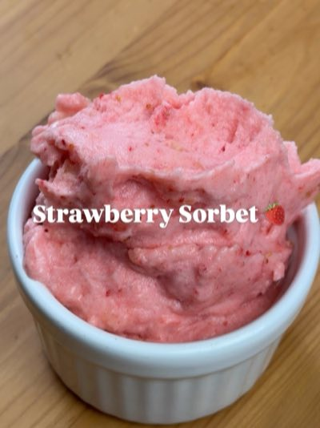
Murder mystery dinner
Print the case, cook from my free recipes, and find out which of your guests did it.
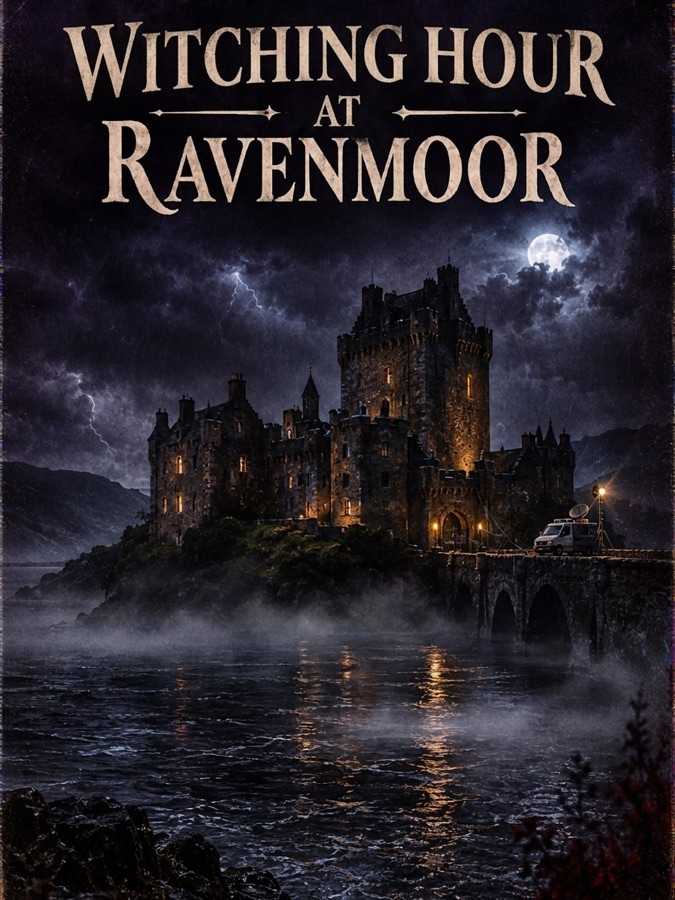
Each case is a printable PDF for one evening – everyone plays a role, one of you did it.
The Christmas village at the North Pole
Perfect for: Christmas party Birthday Office party
An old wine estate on the Moselle
Perfect for: New Year's Eve Birthday Office party
Hollywood, 1934
Perfect for: New Year's Eve Birthday Office party
A Mars station in 2152
Perfect for: New Year's Eve Birthday
A haunted castle, Halloween 1986
Perfect for: Halloween party
Instant PDF after payment. Print it at home or play from your phones.
I've picked a starter, main and dessert from my free recipes for every case – or cook your own.
Everyone gets a role – the clues come out between the courses.
Three courses from my videos that fit the story – free on this site, not part of the PDF.